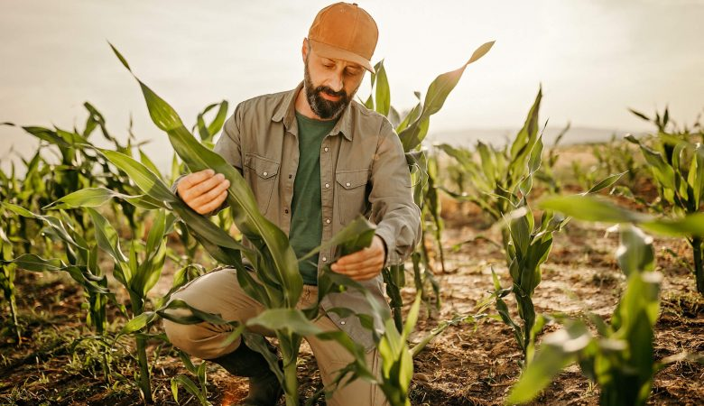

Redes Sociais


Somos uma empresa brasileira do agronegócio constituída em 2008, tendo entre nossos fundadores e administradores, pessoas com mais de 20 anos de experiência no setor agrícola.
Nosso plano de negócios prevê um crescimento acelerado, voltado para a produção de grãos e de expansão na cultura do algodão.
Somos hoje um dos maiores grupos de produção agrícola no estado do Piauí, com mais de 67 mil ha cultivados na safra 2014/15.
Nossas unidades estão estrategicamente localizadas na região dos cerrados Piauienses e nosso sistema de produção privilegia a adoção das mais modernas técnicas de manejo, focando no uso racional e sustentável da terra, sendo ambientalmente correto, adaptado e ajustado para as condições de cultivo locais através de uma rede própria de ensaios tecnológicos.
Origem da Agricult
Renomada empresa de gerenciamento de terras agrícolas e assessoria técnica, com mais de 20 anos de experiência no agronegócio brasileiro e com uma carteira de clientes nas principais regiões agrícolas brasileiras que abrangem as culturas da soja, milho, arroz, algodão, trigo e girassol. Pioneira no desenvolvimento e implementação de modelos de gestão agrícola em propriedades rurais, envolvendo todas as etapas da produção, da determinação do mix de culturas, planejamento das atividades a serem realizadas, acompanhamento das etapas de plantio e manejo até a colheita e publicação dos resultados obtidos. Em seu papel de empresa de difusão de tecnologia, a Insolo Soluções Agrícolas foi pioneira na implantação da agricultura de precisão e na manutenção de campos experimentais próprios com o fim de gerar tecnologia adaptada à região de atuação.